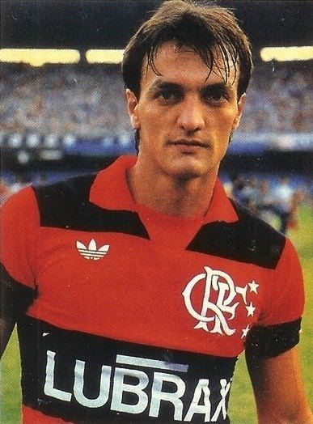

Zico
Zico foi um dos maiores ídolos da história do Flamengo, brilhando intensamente na década de 1980. Com sua habilidade excepcional e precisão nos chutes, ele marcou mais de 500 gols e liderou o time em inúmeras conquistas, tornando-se uma verdadeira lenda e ícone do futebol rubro-negro.
Estatísticas:
- Jogos:731
- Gols:508
- Titulos Conquistados:18
Junior
Junior, também conhecido como "Capacete", foi um dos maiores ídolos do Flamengo. Atuando como lateral-esquerdo, ele brilhou na equipe durante a década de 1980, sendo uma peça fundamental na era de ouro do clube. Sua versatilidade, técnica apurada e habilidades defensivas e ofensivas tornaram-no uma referência no futebol brasileiro e um dos pilares do time rubro-negro em suas conquistas mais importantes.
Estatísticas:
- Jogos:874
- Gols:56
- Titulos Conquistados:19

Leandro
Leandro foi um dos maiores ídolos do Flamengo, atuando como lateral-direito. Ele brilhou no clube durante a década de 1980 e fez parte da lendária geração rubro-negra. Sua habilidade defensiva, poder ofensivo e capacidade de superar adversidades fizeram dele uma peça fundamental nas conquistas importantes do Flamengo nesse período.
Estatísticas:
- Jogos:415
- Gols:14
- Titulos Conquistados:16

Adílio
Adílio foi um meio-campista talentoso e uma figura importante no sucesso do Flamengo. Ele fez parte da lendária equipe da década de 1980, que conquistou títulos importantes, incluindo a Copa Libertadores e o Mundial Interclubes em 1981. Sua qualidade técnica e visão de jogo o tornaram uma peça chave na história vitoriosa do clube rubro-negro.
Estatísticas:
- Jogos:611
- Gols:78
- Titulos Conquistados:16
Petkovic
Petkovic foi um jogador sérvio que se tornou um dos maiores ídolos do Flamengo. Sua passagem pelo clube, especialmente em 2009, foi marcada por gols e assistências espetaculares, incluindo cobranças de falta memoráveis. Ele foi fundamental na conquista do Campeonato Brasileiro daquele ano, ganhando o coração da torcida rubro-negra com sua habilidade técnica e carisma.
Estatísticas:
- Jogos:198
- Gols:57
- Titulos Conquistados:6
Zizinho
Zizinho foi um dos primeiros grandes ídolos do Flamengo e uma das maiores lendas do futebol brasileiro. Atuando como atacante e meio-campista, brilhou intensamente pelo clube na década de 1940, deixando uma marca indelével em sua trajetória. Sua habilidade técnica excepcional, visão de jogo e precisão nos chutes renderam-lhe o apelido de "O Mestre Ziza", eternizando seu nome na história do futebol e no coração dos torcedores rubro-negros.
Estatísticas:
- Jogos:328
- Gols:145
- Titulos Conquistados:5
Gabigol
O atacante brasileiro brilhou intensamente no clube desde sua chegada em 2019, destacando-se por sua capacidade de marcar gols decisivos e por ser peça chave em importantes conquistas, incluindo a Copa Libertadores da América e o Campeonato Brasileiro. Seu carisma e dedicação o tornaram querido pela torcida rubro-negra, consolidando-o como um ícone no futebol brasileiro.
Estatísticas:
- Jogos:236
- Gols:147
- Titulos Conquistados:11
Adriano Imperador
Adriano, também conhecido como "Imperador", foi um atacante brasileiro que teve uma passagem marcante pelo Flamengo. Durante seu período no clube, entre 2009 e 2010, ele mostrou um futebol poderoso e eficiente, sendo fundamental na conquista do Campeonato Brasileiro de 2009. Sua habilidade de finalização e força física o tornaram uma figura adorada pela torcida rubro-negra.
Estatísticas:
- Jogos:92
- Gols:45
- Titulos Conquistados:6

Arrascaeta
Giorgian De Arrascaeta, conhecido como Arrascaeta, é um meia uruguaio que se tornou um dos principais destaques do Flamengo. Sua habilidade técnica excepcional, visão de jogo e precisão nos passes o tornam um jogador fundamental na equipe. Desde sua chegada em 2019, Arrascaeta tem sido peça-chave nas conquistas do clube, incluindo o Campeonato Brasileiro e a Libertadores da América.
Estatísticas:
- Jogos:223
- Gols:57
- Titulos Conquistados:11